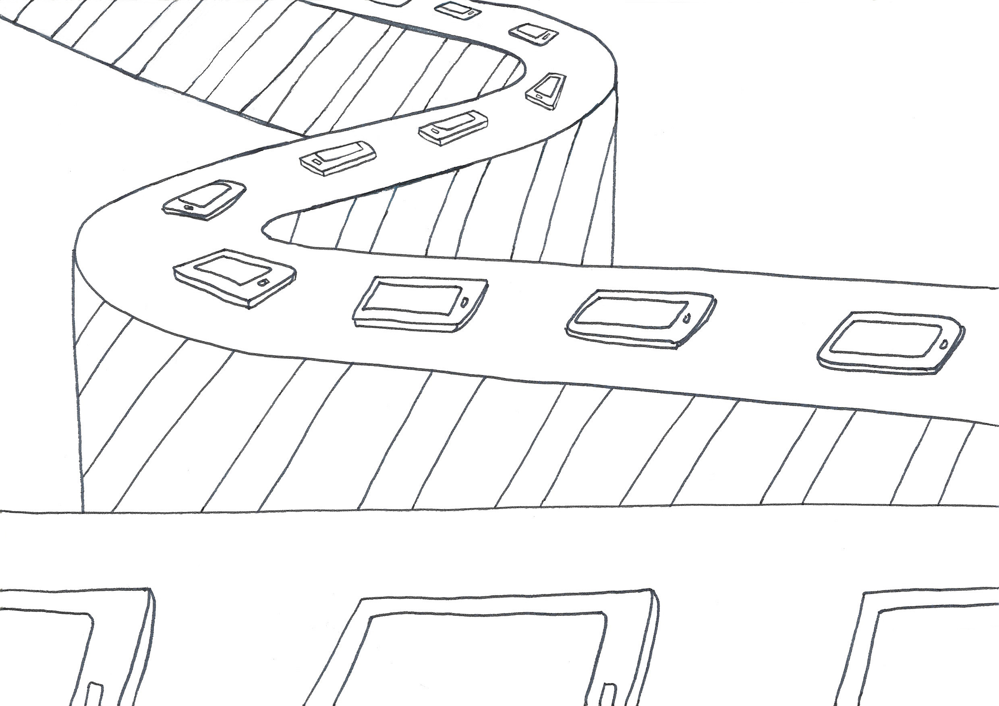
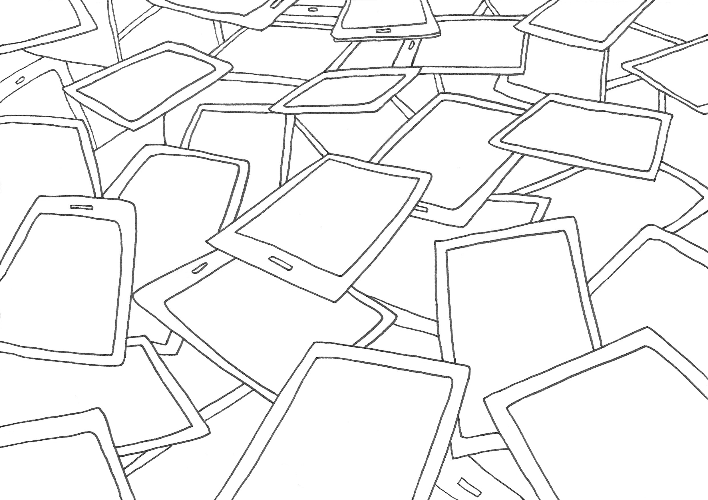

WASTED
LIVES,
WASTING
LIVES
Histories of technological forms are often narrated through the logic of “onward and upward,” (Gabrys, 2011, p. 7)
We are leftovers from our high performative society.
I see circuits and wires left behind
They look like us. They are abandoned
They are neither dead nor alive
I feel they are us. Like us.
I see things discarded
Abandoned arms and legs
But inside, the blood is not clotted yet
The vein is alive, waiting to be connected again
Soon, all the parts may need to be replaced in seconds
We go to the shop to get new limbs with better skin and elastic muscles
We go, to remodel ourselves
Who wants to be an outdated man?
Goodbye my arms and legs
You were useful until the last day,
and you still work well
However, I should replace with new arms and legs
I have to do
New nails would enable faster internet access
New toenails even can be bent and waterproof
Limbs are not permanent parts anymore
Actually, it doesn’t matter if they function or not
The TREND - what important is.
Fast replacement and renovation, the paradigm of today


I have to have new arms,
so I can get a job with a good company
They consider very much about when and what kind of arms I’ve got
How fresh the arms make a considerable gap in the selection of employee
How often replacing is also crucial
The fluidity and flexibility of candidates, they consider importantly
More fluid arms and legs are a requirement for fluid society
They can be bent in all directions, even they have bones inside
Very fluid
To survive, we need fluid limbs,
so we can quickly move around
We can also swim or fly
Look!
I can hear a conversation of discarded arms and legs all the way here
No, they are marching out of dumpsite
They are not dead but alive
No, they are neither alive nor dead
They are not rotten as the blood hasn’t dried yet
Oh, they are discussing
Discussing their value of existence
A British Sociologist(Bauman, 2003) pointed out
modern society is a civilization of excess, surplus, waste and disposing of waste
The straggler of the digital world,
that’s who we are
Remaining parts - arms and legs
Becoming garbage - our lives
Wasted lives
Wasting lives
The life of garbage production
Deprivation
Contamination

What is garbage?
What do we define as trash?
Something worthless and useless
Then, what is the use?
What is the value?
What if we redefine use and value?
Yes. We can walk and move, and our blood still runs
We can even think and discuss
Then, let’s find our own value of existence
The heads and bodies that exist in society are just consumers
They learn just how to pay
In fact, to think and to reason is what arms and legs do
The brain only feels anxious about components that will be thrown away next time
The heart is seduced by fashion and only responds to a momentary experience of consumption
The real brain is not in the head
but in our vein
Emotional and empathic abilities are not in their hearts
but in our blood, which is not dry
We find the value of our existence
We march